Le Mie Esperienze My Experiences
Scopri il territorio passo dopo passo Discover the region step by step
Seleziona la categoria per esplorare i tour. Select a category to explore the tours.
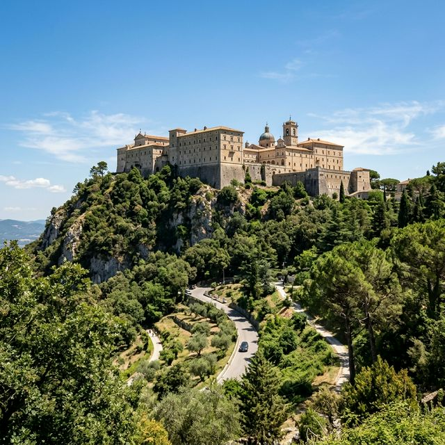
La Battaglia di Cassino — Battlefield & Abbazia The Battle of Cassino — Battlefield & Abbey
Il tour più completo sulla Seconda Guerra Mondiale in Italia. Dall'Historiale di Cassino all'Abbazia di Montec... The most comprehensive WWII tour in Italy. From the Cassino Historiale to the Montecassino Abbey, through the ...

Ciociaria e il Cinema — Luoghi del Neorealismo Ciociaria and Cinema — Neorealism Locations
Case natali di Nino Manfredi e Marcello Mastroianni, i paesaggi del film 'La Ciociara' di Vittorio De Sica con... Birthplaces of Nino Manfredi and Marcello Mastroianni, the landscapes of Vittorio De Sica's film 'Two Women' s...
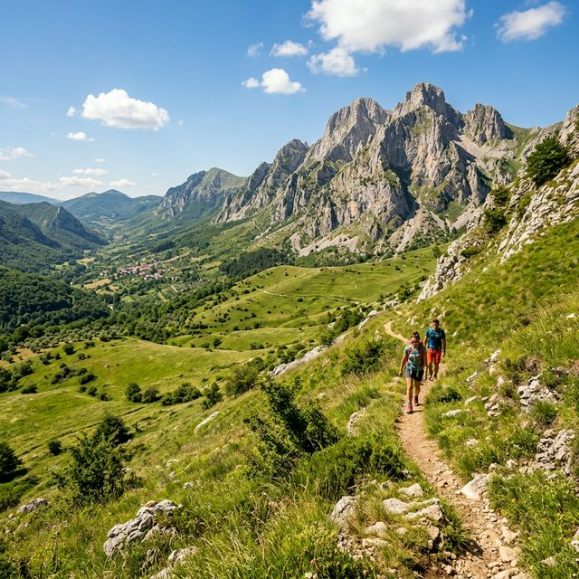
Picinisco & Val di Comino — Tra Borghi e Sapori Picinisco & Val di Comino — Villages and Flavours
Un percorso a piedi tra natura selvaggia, il borgo medievale di Picinisco e una sosta irresistibile per formag... A walking route through wild nature, the medieval village of Picinisco, and an irresistible stop for PDO chees...
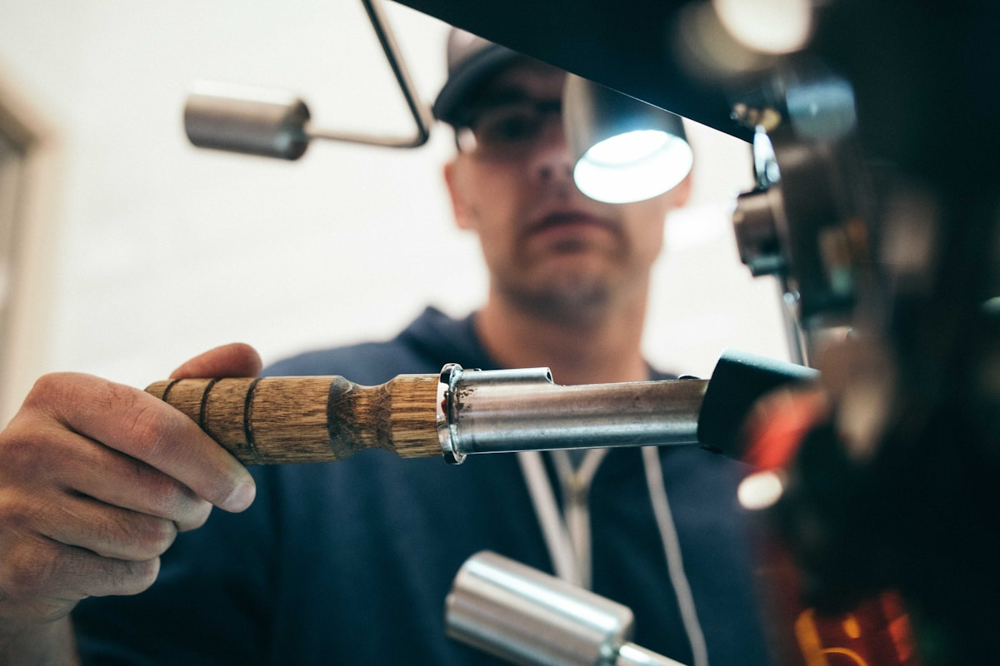
La Via del Rapido — Cassino Riverside The Rapido Way — Cassino Riverside
Percorso lungo il fiume Rapido da Cassino fino a Sant'Elia. Panorami fluviali, sosta al monastero di Sant'Onof... Route along the Rapido river from Cassino to Sant'Elia. River views, stop at the Sant'Onofrio monastery. Ideal...
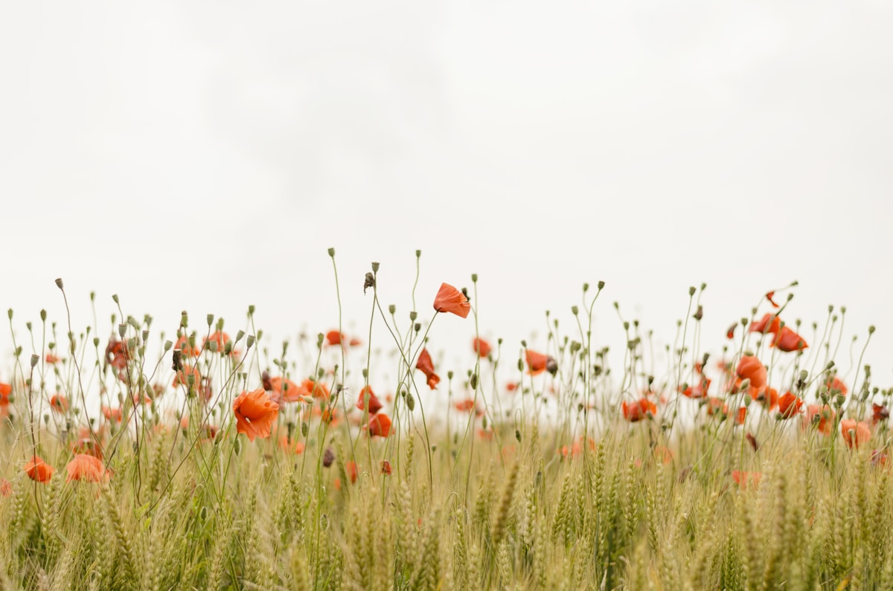
Salita all'Abbazia — Il Colle dei Diavoli Verdi Abbey Climb — The Green Devils Hill
Da Cassino all'Abbazia lungo la strada storica. Sosta al Cimitero Polacco e carro Sherman. Discesa libera con ... From Cassino to the Abbey along the historic road. Stop at the Polish Cemetery and Sherman tank. Freeride desc...

Linea Gustav a Piedi — Bunker e Sentieri Gustav Line on Foot — Bunkers & Trails
Sui crinali della Linea Gustav con accompagnatore turistico esperto WWII a piedi. Sentieri militari e bunker originali tra i bosc... On the Gustav Line ridges with a WWII expert tour leader on foot. Military trails and original bunkers in the woo...
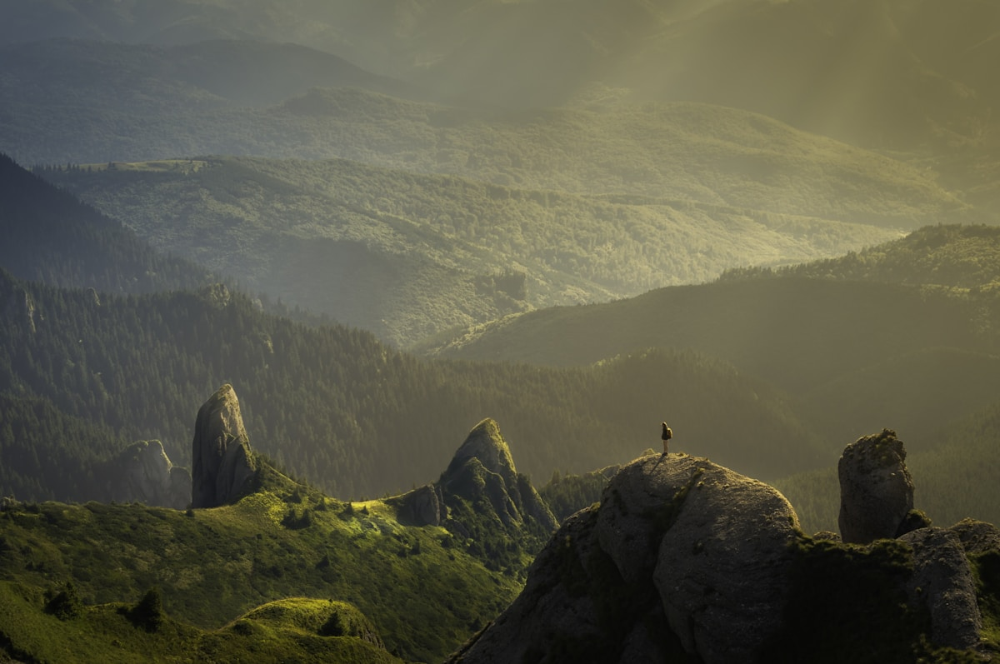
Via Latina in Bici — Da Aquino a Cassino Via Latina by Bike — Aquino to Cassino
Via Latina romana tra Aquinum, Casinum e l'anfiteatro romano. Pianeggiante, adatto a famiglie. Tappa enogastro... Roman Via Latina between Aquinum, Casinum, and the Roman amphitheatre. Flat, family-friendly. Food & wine stop...
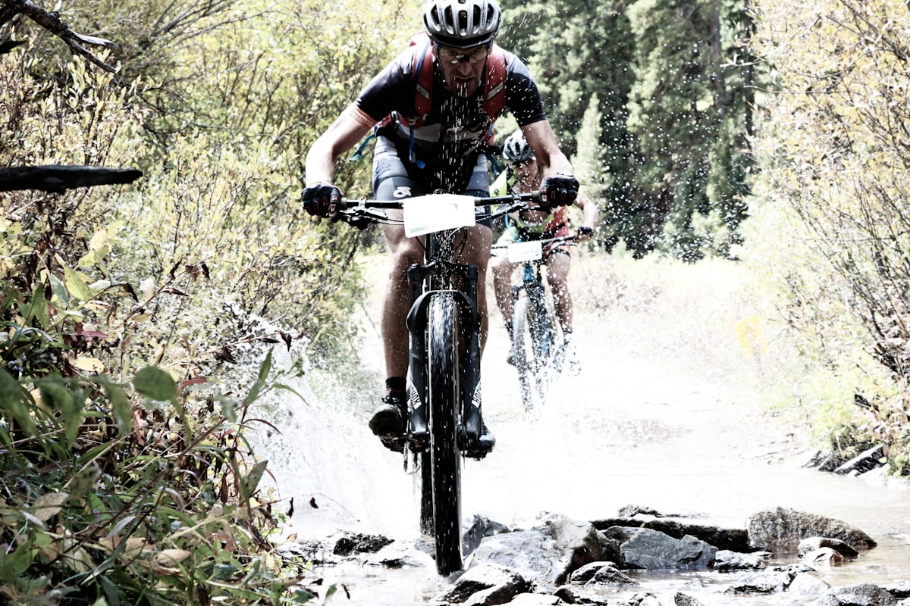
Anello di Vettese — MTB Avanzata Vettese Loop — Advanced MTB
Circuito tecnico da Vettese con fondo misto, 1.100 m di dislivello. Paesaggi selvaggi e borghi fantasma della ... Technical loop from Vettese with mixed terrain, 1,100 m elevation gain. Wild landscapes and ghost villages of ...

Cassino → Gaeta in 3 Giorni — Bikepacking Cassino → Gaeta in 3 Days — Bikepacking
Dalla sorgente del Gari alla Montagna Spaccata. 3 tappe con pernottamenti, luggage transfer e assistenza mecca... From the Gari spring to Montagna Spaccata. 3 stages with overnight stays, luggage transfer, and mechanical sup...

Cooking Class — Pasta Fresca d'Uovo Cooking Class — Fresh Egg Pasta
Laboratorio di cucina genuina alla Fattoria di Nonno Peppe. Si impara la pasta fresca locale e segue degustazi... Authentic cooking workshop at Nonno Peppe's Farm. Learn local fresh pasta making, followed by a tasting of you...
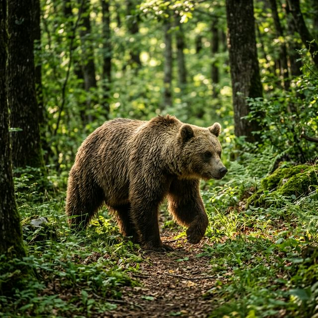
Area Faunistica dell'Orso — Campoli Appennino Bear Wildlife Area — Campoli Appennino
Ammirare gli orsi marsicani in un'area protetta, in totale sicurezza. Emozione per grandi e bambini. Solo nei ... Admire the Marsican bears in a protected area, in complete safety. A thrill for adults and children. Only duri...
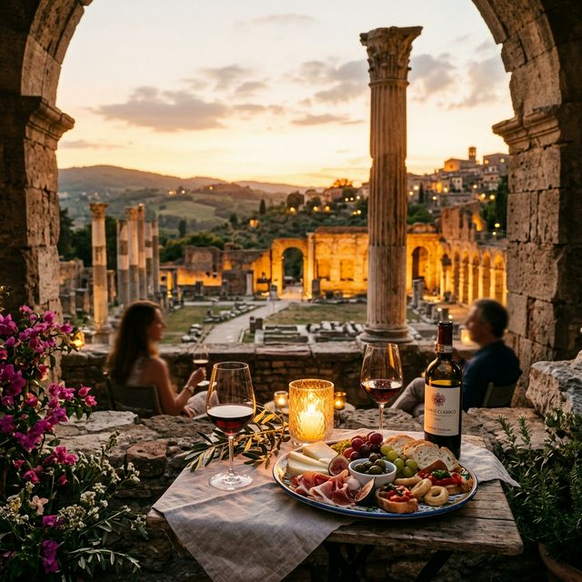
Visita Serale Archeologica — Aquinum Evening Tour — Archaeological Areas of Aquino
Aperitivo serale tra le rovine di Aquinum. Un longa bar tra le pietre antiche, musica live e guida storica. Il... Evening aperitivo among the ruins of Aquinum. A long bar set among ancient stones, live music, and a historica...
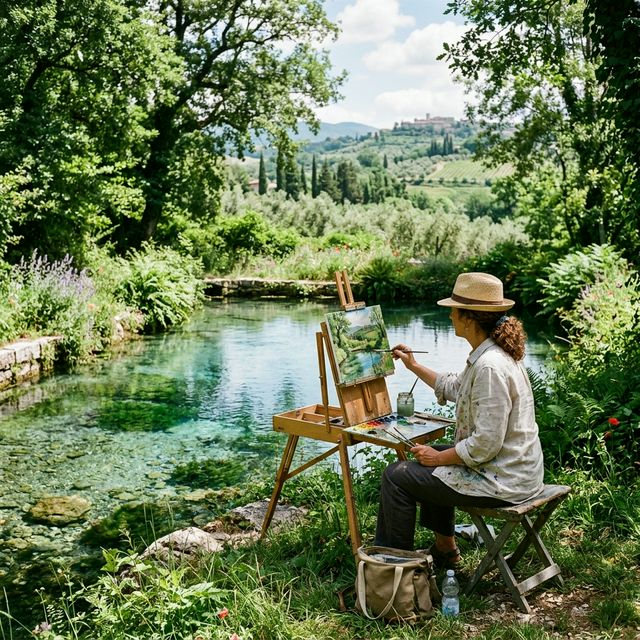
Pittura all'Aria Aperta — Sorgente San Giorgio Plein Air Painting — San Giorgio Spring
Sessione en plein air presso la Sorgente di San Giorgio a Liri: acque cristalline e natura. Un pittore locale ... En plein air session at the San Giorgio spring in Liri: crystal waters and nature. A local painter will guide ...
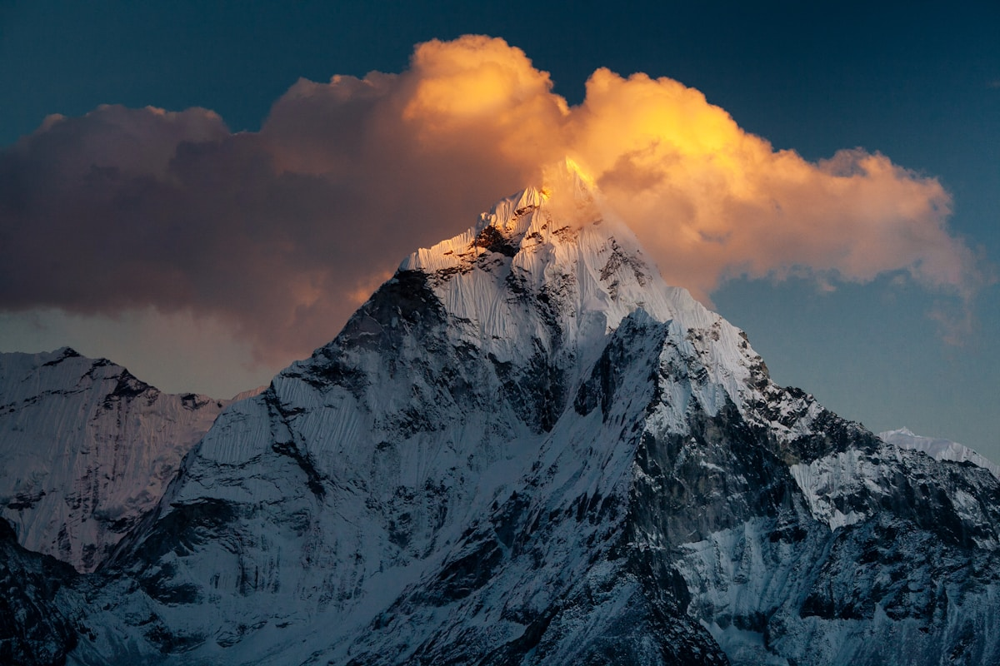
Fotografia Naturalistica — Cervi a Villetta Barrea Nature Photography — Deer in Villetta Barrea
Escursione a Villetta Barrea. Nei periodi giusti è possibile fotografare i cervi in libertà e i caprioli. Con ... Excursion to Villetta Barrea. In the right periods, you can photograph wild deer and roe deer. With a naturali...
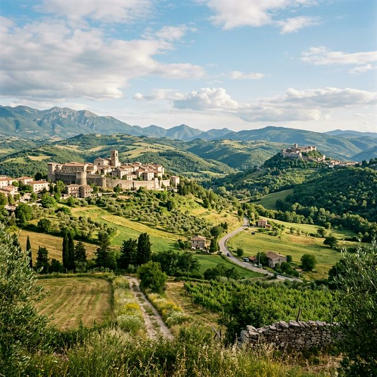
Il Cammino di San Benedetto The Way of Saint Benedict
Ripercorre a ritroso le tappe della vita del Santo, partendo da Cassino verso Norcia. Uno dei cammini spirituali più significativi d'Europa, tra boschi e ... Retraces the stages of the Saint's life backwards, starting from Cassino to Norcia. One of the most significant spiritual paths in Europe, through woods ...
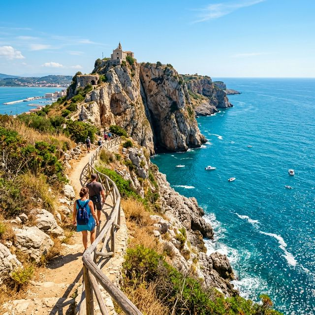
Il Cammino di San Filippo Neri The Way of Saint Philip Neri
Da Cassino a Gaeta attraverso Esperia e Itri. Un itinerario che dal monte scende al mare per terminare alla su... From Cassino to Gaeta through Esperia and Itri. An itinerary that descends from the mountain to the sea, endin...
Il Cammino di Sant'Antonio The Way of Saint Anthony
Un percorso francescano attraverso la Ciociaria e la Marsica, fra eremi e santuari rupestri, per ritrovare spi... A Franciscan path through Ciociaria and Marsica, among hermitages and rock sanctuaries, to rediscover pure and...